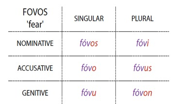
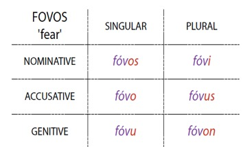
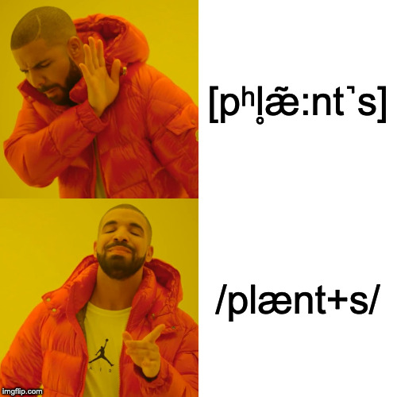
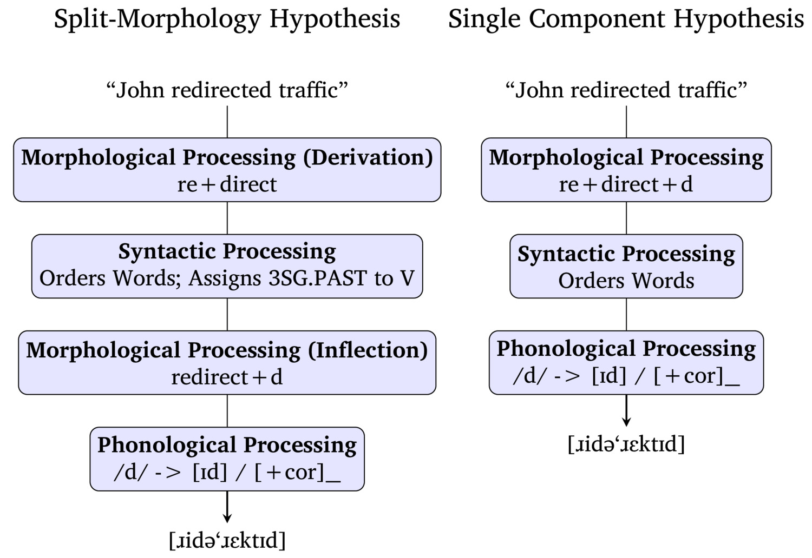
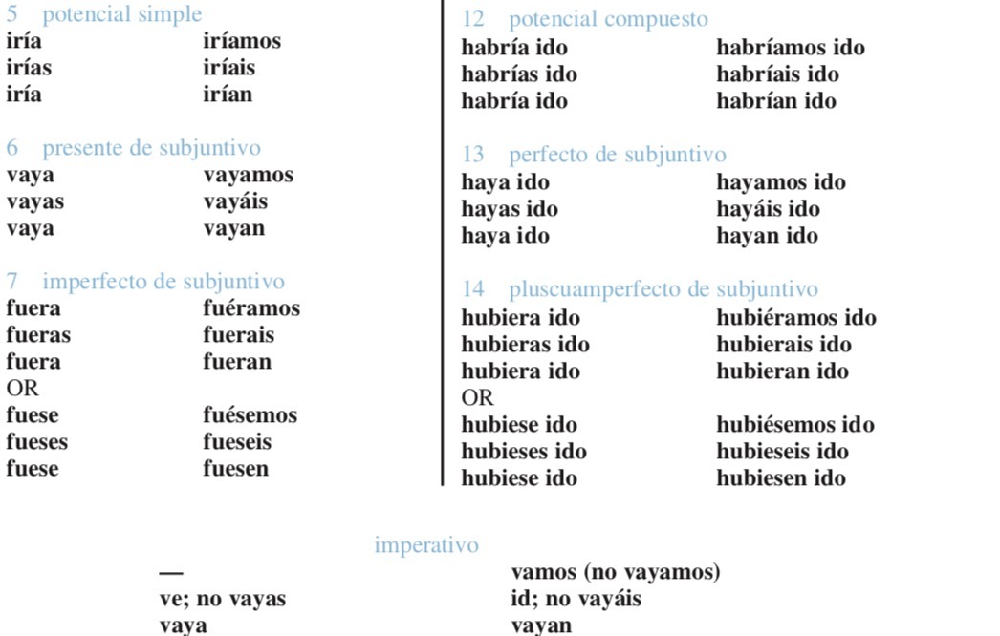
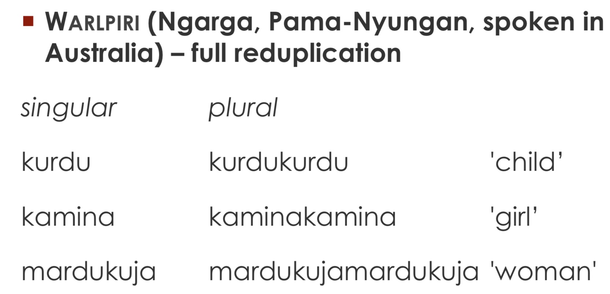

Did you hear about the guy who scammed a publisher by promising to write a dictionary of a language that doesn’t exist?
He was a lexi-con man!


“Let’s see, I need to talk about gluing this thing, again, in the past. That’s ‘glue’, plus ‘re-’, and ‘-ed’.”
“Let’s see, I need to talk about gluing this thing, again, in the past. Looks like ‘reglued’ is the word I need!”
We’ll think about what it means for word-building
What it means for theory
… and what it means about storage
Then Monday, we’ll go the other way!
Generative Linguistics
The Morpheme-based Lexicon
Problems with the Morpheme-based Lexicon
“Your analysis should create all of the forms in the data, without predicting anything that isn’t there”
“Productivity should detail all the possible forms, while preventing ones which aren’t produced”
These are generative approaches
Describe the structure of a language in a way that outlines rules for generating “all and only” the grammatical sentences of the language
“Let’s create rules which generate everything that’s attested in language”
“Let’s build those rules such that they do not generate things that aren’t attested”
The perfect generative grammar for Morphology can create every grammatical word, and forbid every ungrammatical one

Grammar is taking known elements from an inventory and combining them by rule, then passing them on to the next level.
Known sub-elements are combined with rules, and then passed upwards…


Take these pieces (phonemes, morphemes, lexemes) and put them together using rules
Formalize the patterns as abstract rules to generate (only) the correct forms
Storage is kept to a minimum!
This perspective has big consequences for the storage of words!
From 111: “We store phonemes, and then rules generate allophonic detail”
“You wouldn’t want to put”cats” in the dictionary, when we could just add the -s online!”
“We don’t need to create a whole new word, we can just combine”fuse” with “-ion”, easy!”
Computation is cheap, storage is expensive!!
“Let’s store just raw phonemes, and generate details with rules”
“Let’s store bare lexemes, and generate inflected forms with rules”
“We’re not storing that in the lexicon unless we absolutely have to!”
Phonological Irregularity
Morphological Idiosyncrasy
Semantic Idiosyncrasy
We store only that which cannot be predicted by rules!
 


We’re not storing acoustic signals
We’re not storing post-phonological surface forms
We’re storing words as a series of phonemes

Monomorphemic words
Idiosyncratic Forms
Affixes and Productive Morphological Processes



Words are stored as sequences of phonemes
Stems and affixes are stored as unanalyzable chunks with meanings
Storage is viewed as precious, and an effort is made to avoid doing it
We combine these based on rules to generate the non-stored words
Then we do phonology on the output to create legal surface forms
All of the above is done according to abstract rules generating all and only the possible forms
(There are many morpheme-based theories, some of which may have different assumptions. We’re talking generally!)
“cat” ‘cat’ is stored, -s ‘PL’ is stored, so combine them for ‘cat.PL’
“walk” ‘walk’ is stored, -ed ‘PAST’ is stored, so combine them for ‘walk.PAST’
… but we know it isn’t always like that


Suppletive allomorphy must be stored
‘Better’ cannot be derived from ‘Good’ + ‘+er’
‘went’ must be stored independently of ‘go’ and ‘-ed’
The more mice, oxen, deer, and women you have, the more you’re storing
… but this isn’t a big issue, just more storage!
X + Y should transparently mean “X+Y”
Bottler, Painter, Bridger, Plasterer, Lecturer, Influencer
We can understand these words by knowing the meaning of X + the meaning of -er
These don’t need to be stored!
Fletcher, Cobbler, Haberdasher, Butcher, Bursar
We don’t have the meaning of X, so they’re functionally monomorphemic
These must be stored separately!
Hooker, Grinder, Hustler, Professor, Player, Mailer
Here, there’s meaning which is not predictable based on the known components
We must separately store the meanings of these words
… but the biggest issue is …
Zero Expressions
Conversion
Stem Modification
Reduplication
Do we write optional rules?
Do we store morphemes with multiple forms?


sit -> sat/seated, sing -> sang/sung, sting -> stung/stung, yeet -> yote/yaughten
We could store the pattern itself as a lexical entry
Morphemes are stored alongside stem modifications (etc.)
Morphological processes are stored as entries, and combined with stems
… but this quickly erases the ‘elegance’ of the approach
Exceptions have to get stored somehow
You end up with a bunch of edge cases
Disposing of the big chunks is easy and effective
You’re gonna spend a long time chasing down those last slivers
… and you’re still gonna need some tweezers from time to time

Generative approaches to grammar create all and only the attested forms
Morpheme-based lexicons are great for efficiently handling regular patterns
They struggle with irregularity and hard-to-memorize forms
Read the Bybee paper
We’ll talk about whole-word storage as an alternative